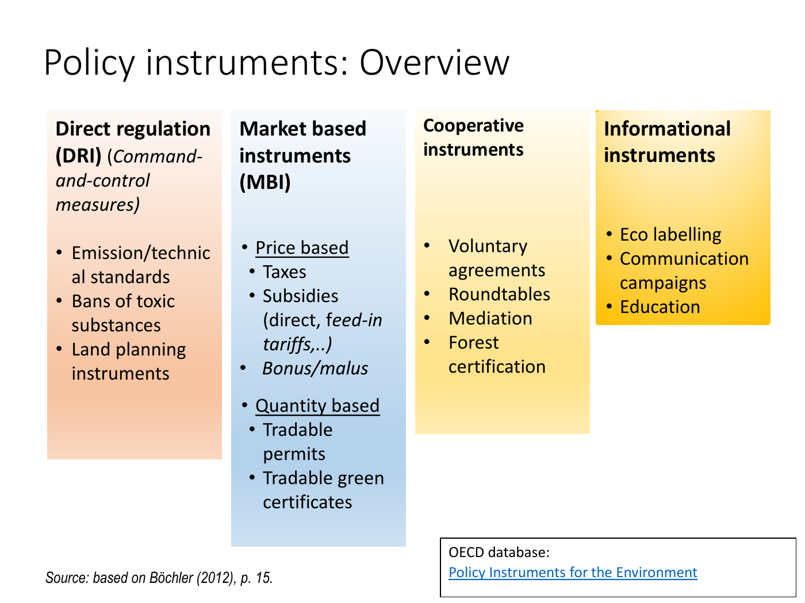
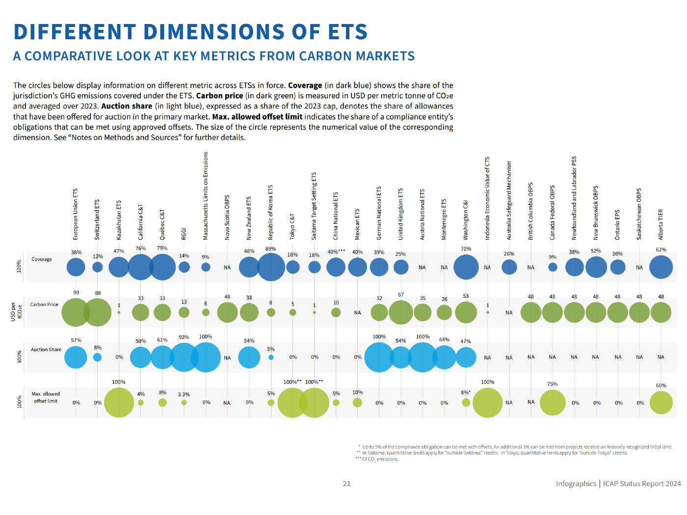

Allocate a fixed abatement target and compare instrument boundaries
Explanation, worked examples and practice
Useful first: Derive private and social activity optima and marginal corrective signals
Outcome and conditions
Four instrument families Tradable rights and flexibility Why common marginal costs minimize total abatement costs Innovation and environmental effectiveness Different ETS metrics answer different questions Climate agreements and EU targets as recorded in the lecture
Study conditions, assessment scope and sources
Derive least-cost abatement and compare what price/quantity instruments establish under explicit coverage and enforcement conditions. Required components: least_cost_allocation_and_price, instrument_families_and_flexibility, effectiveness_innovation_and_metric_limits. Supported work may use the cited notes; independent checks use no notes, internet, solution or hints. A basic calculator and blank paper are allowed; reasoning, formula selection and assumptions must be supplied by the learner. Numerical examples below are agent-created hypothetical instantiations unless explicitly labelled as a finished-note example. They do not assert current market or policy facts.
Prerequisites and checks
Check the prerequisites
O010-P1 / item_version 1: O006 is needed because a socially chosen target differs from least-cost implementation. Prompt: Does equal \(\mathrm{MAC}\) alone prove the emissions target optimal? Key: No; it minimises comparable compliance cost for a given feasible target; social benefit/damage selects the target. Pass requires the keyed mechanism and qualification; partial means an omitted step; fail means a conflicting mechanism. Adequate committed evidence under a compatible criterion permits skipping this diagnostic. Otherwise repair through Outcome and conditions before continuing.
Motivation and explanation
For these numerical examples \(C_1(0)=C_2(0)=0\); a marginal-cost curve alone would leave each additive cost constant unspecified. For a fixed total abatement, minimise the sum of each firm’s cost with \(\sum_i a_i=\text{target}\). At a smooth interior choice, every \(\mathrm{MAC}_i=\lambda\), the constraint’s marginal cost. Otherwise shifting a small amount from the higher marginal cost to the lower one reduces cost at unchanged total. A tax creates savings of \(t\) per emission avoided; a tradable right creates opportunity value \(p\), even if received free. Thus interior \(\mathrm{MAC}_i=t\) or \(\mathrm{MAC}_i=p\). This is cost effectiveness; welfare efficiency also requires the target’s social tradeoff. Quantity and price instruments fix different variables, with coverage/enforcement defining their reach. Flexibility across time and space needs defined rights and can change receptor exposure; emissions are not automatically interchangeable. Innovation can change costs unevenly. Historical graphics compare dimensions with different units, dates and missing values; they do not establish current legal rules or causal welfare performance.
Read the full explanation
Reading context
Deliver these complete reused passages before the worked example; earlier concise prompts are checkpoints, not substitutes. Necessary prerequisites use the complete prepared lessons specified above.
Source passage
Origin: reused complete checked passage Four instrument families; fingerprint 9e2f739fb2dec5a81d11a4afc2b62308b70ad5ab27a0310d07f641df4eb7d87a. Heading depth alone is adapted.
Four instrument families

Lecture physical PDF p. 31, based on Böchler (2012). Direct regulation, market based, cooperative and informational instruments are separate families; the attached OECD pointer is not an additional ingested source. Lecture, physical PDF p. 31
Direct regulation includes emission/technical standards, bans on toxic substances and land-planning measures. Price based instruments include taxes, direct subsidies, feed-in tariffs and bonus/malus systems; quantity based instruments include tradable permits and green certificates. Cooperative approaches include voluntary agreements, roundtables, mediation and forest certification. Information instruments include ecolabelling, communication campaigns and education. The classification describes how policy acts; it does not demonstrate that all entries have equal enforceability or welfare effects. Lecture, physical PDF p. 31
Source passage
Origin: reused complete checked passage Tradable rights and flexibility; fingerprint 9e2f739fb2dec5a81d11a4afc2b62308b70ad5ab27a0310d07f641df4eb7d87a. Heading depth alone is adapted.
Tradable rights and flexibility
A firm with allowances above its emissions can sell its surplus to another firm that lacks them. A market price makes saving an allowance valuable even when it was originally allocated free: abatement permits a sale or avoids a purchase. A cap-and-trade system sets an aggregate quota; a baseline-and-credit system issues emission-reduction credits relative to a baseline. The lecture also lists minimum-limit-and-trade arrangements, averaging across similar products (cars/engines), and transferable use/abstraction rights such as fishing quotas. These forms require different baselines and definitions of the tradable right; the source supplies their classification rather than detailed design rules. Lecture, physical PDF p. 34
Flexibility across time
Budgeting emissions or abstractions over a period allows transfers within that period. Banking moves a currently valid permit to a later period; borrowing uses a permit from a future period early. Differentiating ordinary operation from short pollution peaks is another listed form of timing flexibility. These arrangements change when compliance occurs, so a total over several years and a short-term peak constraint are different requirements. This distinction is explanatory synthesis of the listed forms; the lecture does not specify discount rates, borrowing limits or safeguards. Lecture, physical PDF p. 32
Flexibility across space
An emission bubble sets a total emissions ceiling for a designated territory with several sources. A deposition bubble instead covers sources contributing deposition to a target area. Offsets transfer between bubbles while adjusting their ceilings, possibly with weights. Netting is a bubble-like arrangement within an industrial facility. The distinction between emitted quantity and deposition at a receptor matters because equal quantities from different locations need not have identical consequences. The source lists the forms but supplies no numerical transport/deposition coefficients. Lecture, physical PDF p. 33
Source passage
Origin: reused complete checked passage Why common marginal costs minimize total abatement costs; fingerprint 9e2f739fb2dec5a81d11a4afc2b62308b70ad5ab27a0310d07f641df4eb7d87a. Heading depth alone is adapted.
Why common marginal costs minimize total abatement costs
Let \(a_i\) be firm \(i\)'s abatement, \(C_i(a_i)\) its abatement cost and \(MAC_i=C_i'(a_i)\) its marginal abatement cost, expressed as money per avoided emission unit. For a fixed total abatement requirement \(\bar a\), an explanatory derivation of the lecture's least-cost condition is
At a smooth interior optimum, \(MAC_i(a_i)=\lambda\) for every firm, where \(\lambda\) is the common marginal cost of meeting the target. If one firm instead has higher MAC, shifting a small amount of abatement from it to a lower-MAC firm keeps the total unchanged and lowers cost. This argument assumes comparable emission/abatement units and a target that allows the transfer. Location-specific damage, constraints and transaction costs can restrict it; the lecture does not establish that unrestricted trading of every pollutant is harmless. Lecture, physical PDF pp. 33–34,44
Under a tax \(t\) per emitted unit, a firm saves \(t\) by avoiding one unit and, at an interior choice, abates until \(MAC_i=t\). With an allowance price \(p\), it abates and sells/avoids buying an allowance when \(MAC_i<p\), while emitting and buying is cheaper when \(MAC_i>p\); the equilibrium margin is \(MAC_i=p\). A common price thus equalizes marginal costs across unconstrained firms. This is cost effectiveness for a given target. It establishes full welfare efficiency only if the target/price also reflects social benefits and damages under the conditions in the optimum model. Lecture, physical PDF p. 44 Lecture, physical PDF p. 20

Lecture p. 46 compares a tax shifting the private supply schedule toward social cost with a permit quantity that fixes the relevant quantity and allows a price to emerge. It is a simple known-curve illustration, not an uncertainty model. Lecture, physical PDF p. 46
Source passage
Origin: reused complete checked passage Innovation and environmental effectiveness; fingerprint 9e2f739fb2dec5a81d11a4afc2b62308b70ad5ab27a0310d07f641df4eb7d87a. Heading depth alone is adapted.
Innovation and environmental effectiveness
Pricing each emission unit gives a continuing reason to seek cheaper avoidance. The lecture illustrates innovation as a shift from \(MAC_1\) to \(MAC_2\), with greater abatement at the same tax and a reduction in compliance cost. But innovation need not lower MAC at every margin: a technology can lower some parts of the curve while raising others. The source distinguishes this from commonly assumed reductions in average cost at all margins. The welfare or firm gain must therefore follow the actual curves, rather than treating every innovation as a parallel downward shift. Lecture, physical PDF pp. 44–45

Lecture p. 45: the horizontal Pigouvian tax intersects \(MAC_1\) at \(A_1\) and \(MAC_2\) at \(A_2\). The slide discusses the area between marginal curves but also qualifies the commonly used downward-shift picture. Lecture, physical PDF p. 45
A monitored/enforced ban or direct quantity requirement specifies a target. A tax specifies a rate and leaves the response—and therefore the achieved emission quantity—dependent on behaviour, exemptions and costs. A tradable quantity constraint fixes the covered quantity while leaving its price to the market. Voluntary and information instruments are difficult to enforce or give uncertain responses. These are the lecture's ideal effectiveness comparisons. Clear targets require monitoring, enforcement and appropriate coverage; a cap on covered sources is not by itself proof of an economy-wide emission outcome. The lecture mentions minimizing control mistakes under price-versus-quantity instruments but does not derive an uncertainty-based ranking. Lecture, physical PDF pp. 44,47
Source passage
Origin: reused complete checked passage Historical policy examples and chart interpretation; fingerprint 9e2f739fb2dec5a81d11a4afc2b62308b70ad5ab27a0310d07f641df4eb7d87a. Heading depth alone is adapted.
Historical policy examples and chart interpretation
The lecture reports that the US Acid Rain Program followed the 1990 Clean Air Act amendment, began SO₂ trading in 1995 and expanded in 2000. It attributes practicality to relatively few easily monitored polluters and reports emissions more than 50% lower in 2007, three years before the statutory deadline, with compliance costs about one quarter of original predictions. The slide does not state the reference year for that percentage or an identification method separating trading from other influences. Treat these as the supplied lecture's historical descriptive claims, not a new causal estimate or current performance measure. Lecture, physical PDF p. 36
Different ETS metrics answer different questions

Lecture p. 38 reproduces an ICAP Status Report 2024 map, labelled as January 2024. Blue indicates systems in force; green indicates development; light green/question marks indicate consideration. Layered borders indicate multiple systems or an additional system under development. Lecture, physical PDF p. 38
The text says 36 systems were in force and 14 under development. It says 12 jurisdictions were considering ETS, while the legend labels 8 under consideration; the displayed discrepancy/counting-unit distinction is not resolved by the slide and should not be collapsed into one count. The map shows that deployment spans several jurisdictions and administrative layers, without establishing effectiveness or comparable system coverage. The preceding lecture claim that permits are somewhat preferred to carbon taxation is motivated by temperature targets and carbon budgets, not proven by this map. Lecture, physical PDF pp. 37–38

Lecture p. 39, ICAP 2024: rows show jurisdiction-emission coverage (%), 2023 average price (USD per metric tonne CO₂e), auction share of the 2023 cap (%), and maximum offset share of a compliance entity's obligation (%). NA is unavailable, not zero. Circle sizes represent the values within their respective dimensions. Lecture, physical PDF p. 39
The EU ETS column gives 38% coverage, USD 90/tCO₂e, 57% auction share and 0% offsets. China's national ETS gives 40%, USD 10, 0% and 5%, respectively. A larger circle for coverage cannot be interpreted as a higher price or a larger absolute volume: the rows have different units and scales. Washington's offset footnote distinguishes up to 5% plus another 3% from projects on federally recognized tribal land. The 100% figures for Tokyo and Saitama retain quantitative restrictions on credits from outside those areas; the China coverage footnote is CO₂ emissions. These qualifications limit direct comparisons. Lecture, physical PDF p. 39

Lecture p. 40, ICAP 2024: stacked bars show annual revenues in million USD from 2007–2023, with annotations on additional systems; the pie separates 2023 revenue by system. It reports almost USD 303 billion cumulative revenue and almost USD 74 billion in 2023. Lecture, physical PDF p. 40
The 2023 EU ETS component is USD 47,098.0 million, Germany USD 11,560.0 million and UK USD 5,223.9 million. A revenue increase can reflect price, auctioned amount or new systems; it is not an emission-reduction series or a direct welfare gain. Footnotes state that some Canadian data stop in 2020 or 2022 and that New Brunswick/Ontario data were unavailable, and qualify the Nova Scotia last auctions. Therefore even the plotted historical totals have coverage limitations. Revenue use connects to the recycling and double-dividend discussion. Lecture, physical PDF pp. 40,49–53
Climate agreements and EU targets as recorded in the lecture
The source lists UNFCCC (1992), Kyoto adopted in 1997/in force 2005, Kyoto II commitments through 2020 for 61 countries, and international trading among three flexible mechanisms; it reports a Czech sale to Japan of about CZK 20 billion. It presents the Paris 2015 objective as well below 2°C while pursuing 1.5°C and describes NDC revision every five years. Its shorthand “not formally binding” refers to the slide's characterization of NDCs and should not be used as a complete statement of all obligations under the treaty. The lecture first records the EU's older 40% 2030 ambition, then p. 42 records a 55% GHG reduction relative to 1990, 42.5% renewable share and 11.7% energy-efficiency improvement relative to projected 2030 use under the 2020 reference scenario. These have different denominators and the two emissions ambitions are historical versus later source figures, not one percentage applied to the same baseline. Lecture, physical PDF pp. 41–42
The p. 42 line “EU 2040 climate target” contains no target value. No number can be recovered from that title. All policy figures and system descriptions above are bounded to this October 2025 lecture and its 2024 graphics; this ingestion does not verify the present legal or policy situation. Lecture, physical PDF pp. 1,38–42
Source passage
Origin: reused complete checked passage What to retain; fingerprint 9e2f739fb2dec5a81d11a4afc2b62308b70ad5ab27a0310d07f641df4eb7d87a. Heading depth alone is adapted.
What to retain
Equalizing marginal abatement costs economizes on compliance resources, while selecting the social target and achieving it require additional reasoning and enforcement. A price incentive can promote innovation, but the technology response is not mechanically uniform. Interpret ETS quantity, price, coverage, auctions, offsets and revenue as separate metrics with their source dates and units. Lecture, physical PDF pp. 44–47,38–40
Worked example
O010-W1 / item_version 1, worked_example. Prompt: Hypothetical comparable emissions with smooth interior feasible abatement: \(\mathrm{MAC}_{1}=2a_1, \mathrm{MAC}_{2}=4a_2\), total target \(18\); neither capacity binds, and \(C_1(0)=C_2(0)=0\) so there are no unspecified fixed-cost constants. Derive the least-cost allocation/common price, calculate total cost against equal abatement, and explain why a small shift from high-\(\mathrm{MAC}\) to low-\(\mathrm{MAC}\) saves cost. Compare tax/cap quantity-price decisions, free allowance opportunity cost, and whether least-cost compliance chooses the socially optimal target. Classify direct, market, cooperative and informational families with examples; distinguish banking/borrowing, emission/deposition bubbles, offsets/netting and cap-and-trade/baseline-credit rights. At the old fixed tax, firm \(1\)’s new \(\mathrm{MAC}=1a_1\): interpret its new abatement without claiming every innovation shifts every curve down. A historical graph combines coverage and price. Interpret historical ETS coverage percentages, \(\mathrm{USD}/\mathrm{ton}\) prices, auction/offset shares and revenue units, unavailable data/count discrepancy and enforcement/location limits, without a current-policy or causal welfare claim.
Steps and interpretation: Constraint \(a_1+a_2=18\) and first-order equality \(2a_1=4a_2\) give \(a_1=12.000000, a_2=6.000000\), common \(\mathrm{MAC}=\text{price}=24.000000\) money/unit. With the declared zero-cost origins, integrating each linear \(\mathrm{MAC}\) gives total \(.5\times 2a_1^{2}+.5\times 4a_2^{2}=216.000000\); equal split costs \(243.000000\). Reassigning a small unit toward lower \(\mathrm{MAC}\) keeps total fixed and reduces cost; smoothness/interior/comparable units and constraints matter. Tax fixes price, quantity responds; covered cap fixes quantity, price responds. Free allowances still have sale/avoid-purchase opportunity cost. Least cost for a target does not prove the target matches social benefit/damage. Direct standards/bans; market taxes/permits; cooperative voluntary agreements; information labelling/education. Banking carries current rights forward, borrowing uses future early. Emission bubble limits emitted total, deposition bubble concerns receptor area; weighted offsets move ceilings, netting within facility. Cap-and-trade fixes covered quota; baseline-credit issues reductions against a defined baseline. New firm \(1\) abatement at unchanged tax is \(24.0/1=24.000000\) under declared interior conditions, but actual new curves can cross, so no universal downward \(\mathrm{MAC}\) assertion. Historical coverage percent, price \(\mathrm{USD}/\mathrm{tCO}_2\mathrm{e}\), auction share of cap, offset share of obligation and revenue millionUSD have different denominators; revenue is not emissions reduction or automatic welfare gain. NA is unavailable, not zero; source map \(12\) jurisdictions versus legend \(8\) consideration count is unresolved. Monitor/enforce covered rights and consider location-specific harm/constraints; a cap does not establish economy-wide outcome. Source EU target percentages have distinct baselines and 2040 heading has no value; no number/current legal ranking is invented.
Supported completion
Write your reasoning, then reveal the complete key to check each step.
A local draft for your own study.
Reveal explanation
Key: Constraint \(a_1+a_2=12\) and first-order equality \(3a_1=6a_2\) give \(a_1=8.000000, a_2=4.000000\), common \(\mathrm{MAC}=\text{price}=24.000000\) money/unit. With the declared zero-cost origins, integrating each linear \(\mathrm{MAC}\) gives total \(.5\times 3a_1^{2}+.5\times 6a_2^{2}=144.000000\); equal split costs \(162.000000\). Reassigning a small unit toward lower \(\mathrm{MAC}\) keeps total fixed and reduces cost; smoothness/interior/comparable units and constraints matter. Tax fixes price, quantity responds; covered cap fixes quantity, price responds. Free allowances still have sale/avoid-purchase opportunity cost. Least cost for a target does not prove the target matches social benefit/damage. Direct standards/bans; market taxes/permits; cooperative voluntary agreements; information labelling/education. Banking carries current rights forward, borrowing uses future early. Emission bubble limits emitted total, deposition bubble concerns receptor area; weighted offsets move ceilings, netting within facility. Cap-and-trade fixes covered quota; baseline-credit issues reductions against a defined baseline. New firm \(1\) abatement at unchanged tax is \(24.0/1.5=16.000000\) under declared interior conditions, but actual new curves can cross, so no universal downward \(\mathrm{MAC}\) assertion. Historical coverage percent, price \(\mathrm{USD}/\mathrm{tCO}_2\mathrm{e}\), auction share of cap, offset share of obligation and revenue millionUSD have different denominators; revenue is not emissions reduction or automatic welfare gain. NA is unavailable, not zero; source map \(12\) jurisdictions versus legend \(8\) consideration count is unresolved. Monitor/enforce covered rights and consider location-specific harm/constraints; a cap does not establish economy-wide outcome. Source EU target percentages have distinct baselines and 2040 heading has no value; no number/current legal ranking is invented.
Allowed support: show the named definition or equation in Motivation and explanation, then ask for the missing substitution and interpretation. At most two hints: first identify the relevant distinction; second point to the first keyed step. Reveal the worked solution if those fail. Supported success does not establish acquisition. Fade assistance only once the learner explains the keyed steps; then hide the solution and use an unused full check.
Rubric and independence
Self-assessment criteria and tutor checks
Pass requires every listed component, all requested outputs and essential keyed reasoning without a critical conceptual error. Algebraically equivalent formulas, explicitly defined opposite cash-flow signs and equivalent plain-language reasoning are accepted. Partial means a missing component or a correct method with an unresolved isolated arithmetic slip; fail means the central mechanism or condition is wrong. Unscorable means the response or help/exposure conditions cannot be established. Unknown conditions never certify independence. Arithmetic slips require independent correction before a pass. No numerical grade is invented.
Critical errors: Equal target split always cheapest; free allowance has no incentive; equal \(\mathrm{MAC}\) proves optimal social target; revenue/coverage proves welfare; cap automatically controls all emissions; missing count/target invented.
Acquisition requires two distinct unassisted passes from I1/I2/D1/D2 using the exact six routes in metadata. Each full prompt and key covers every component; any pair therefore covers the whole outcome twice. A fresh D item used for acquisition cannot later certify delayed retention. Worked/support/prerequisite items and the narrow C1 correction cannot substitute for a full check. The finite bank must not be reused after exposure; request a plan_issue when fewer than two fresh full items remain.
| Component | I1 | I2 | D1 | D2 |
|---|---|---|---|---|
| least_cost_allocation_and_price | required | required | required | required |
| instrument_families_and_flexibility | required | required | required | required |
| effectiveness_innovation_and_metric_limits | required | required | required | required |
Misconceptions and correction
If equal abatement is called efficient, compare the two marginal costs before comparing totals. If free allocation is treated as costless, ask what sale is forgone by using the allowance. Observe the learner's reasoning before diagnosing: a sign or omitted word alone is tentative. Score before help. O010-C1 / item_version 1, narrow_correction. Fresh prompt: Fresh narrow check: a free permit can be sold for \(30\), abating the next unit costs \(20\). Incentive? Key and rubric: Abating costs \(20\) and permits a \(30\) sale or avoids using that valuable right; net \(10\) benefit under the supplied conditions. Free receipt does not remove opportunity cost. Pass only if the keyed repaired component is supplied; partial for an omission or arithmetic slip; fail for the same conflicting mechanism. C1 is not a full independent check. After two ineffective hints show the relevant worked step; after another failed correction pause and return to the named prerequisite or explanation.
Immediate and delayed checks
All items are item_version 1 and full_capability_check. I1/I2 are immediate forms; D1/D2 are distinct delayed forms. Delayed success requires an unused unassisted item before recap, at least 24 actual elapsed hours after acquisition and the most recent relevant teaching/solution exposure, with intervening exposure recorded. A date change alone does not qualify. Early D attempts may be acquisition checks only. Each item is a bounded parallel or near-context variant, not proof of broad transfer. Each key states the full required response; do not improvise extra variants.
A local draft for your own study.
Reveal explanation
Key and essential rubric: Constraint \(a_1+a_2=15\) and first-order equality \(4a_1=8a_2\) give \(a_1=10.000000, a_2=5.000000\), common \(\mathrm{MAC}=\text{price}=40.000000\) money/unit. With the declared zero-cost origins, integrating each linear \(\mathrm{MAC}\) gives total \(.5\times 4a_1^{2}+.5\times 8a_2^{2}=300.000000\); equal split costs \(337.500000\). Reassigning a small unit toward lower \(\mathrm{MAC}\) keeps total fixed and reduces cost; smoothness/interior/comparable units and constraints matter. Tax fixes price, quantity responds; covered cap fixes quantity, price responds. Free allowances still have sale/avoid-purchase opportunity cost. Least cost for a target does not prove the target matches social benefit/damage. Direct standards/bans; market taxes/permits; cooperative voluntary agreements; information labelling/education. Banking carries current rights forward, borrowing uses future early. Emission bubble limits emitted total, deposition bubble concerns receptor area; weighted offsets move ceilings, netting within facility. Cap-and-trade fixes covered quota; baseline-credit issues reductions against a defined baseline. New firm \(1\) abatement at unchanged tax is \(40.0/2=20.000000\) under declared interior conditions, but actual new curves can cross, so no universal downward \(\mathrm{MAC}\) assertion. Historical coverage percent, price \(\mathrm{USD}/\mathrm{tCO}_2\mathrm{e}\), auction share of cap, offset share of obligation and revenue millionUSD have different denominators; revenue is not emissions reduction or automatic welfare gain. NA is unavailable, not zero; source map \(12\) jurisdictions versus legend \(8\) consideration count is unresolved. Monitor/enforce covered rights and consider location-specific harm/constraints; a cap does not establish economy-wide outcome. Source EU target percentages have distinct baselines and 2040 heading has no value; no number/current legal ranking is invented. All components are required.
A local draft for your own study.
Reveal explanation
Key and essential rubric: Constraint \(a_1+a_2=16\) and first-order equality \(2a_1=6a_2\) give \(a_1=12.000000, a_2=4.000000\), common \(\mathrm{MAC}=\text{price}=24.000000\) money/unit. With the declared zero-cost origins, integrating each linear \(\mathrm{MAC}\) gives total \(.5\times 2a_1^{2}+.5\times 6a_2^{2}=192.000000\); equal split costs \(256.000000\). Reassigning a small unit toward lower \(\mathrm{MAC}\) keeps total fixed and reduces cost; smoothness/interior/comparable units and constraints matter. Tax fixes price, quantity responds; covered cap fixes quantity, price responds. Free allowances still have sale/avoid-purchase opportunity cost. Least cost for a target does not prove the target matches social benefit/damage. Direct standards/bans; market taxes/permits; cooperative voluntary agreements; information labelling/education. Banking carries current rights forward, borrowing uses future early. Emission bubble limits emitted total, deposition bubble concerns receptor area; weighted offsets move ceilings, netting within facility. Cap-and-trade fixes covered quota; baseline-credit issues reductions against a defined baseline. New firm \(1\) abatement at unchanged tax is \(24.0/1=24.000000\) under declared interior conditions, but actual new curves can cross, so no universal downward \(\mathrm{MAC}\) assertion. Historical coverage percent, price \(\mathrm{USD}/\mathrm{tCO}_2\mathrm{e}\), auction share of cap, offset share of obligation and revenue millionUSD have different denominators; revenue is not emissions reduction or automatic welfare gain. NA is unavailable, not zero; source map \(12\) jurisdictions versus legend \(8\) consideration count is unresolved. Monitor/enforce covered rights and consider location-specific harm/constraints; a cap does not establish economy-wide outcome. Source EU target percentages have distinct baselines and 2040 heading has no value; no number/current legal ranking is invented. All components are required.
A local draft for your own study.
Reveal explanation
Key and essential rubric: Constraint \(a_1+a_2=18\) and first-order equality \(5a_1=10a_2\) give \(a_1=12.000000, a_2=6.000000\), common \(\mathrm{MAC}=\text{price}=60.000000\) money/unit. With the declared zero-cost origins, integrating each linear \(\mathrm{MAC}\) gives total \(.5\times 5a_1^{2}+.5\times 10a_2^{2}=540.000000\); equal split costs \(607.500000\). Reassigning a small unit toward lower \(\mathrm{MAC}\) keeps total fixed and reduces cost; smoothness/interior/comparable units and constraints matter. Tax fixes price, quantity responds; covered cap fixes quantity, price responds. Free allowances still have sale/avoid-purchase opportunity cost. Least cost for a target does not prove the target matches social benefit/damage. Direct standards/bans; market taxes/permits; cooperative voluntary agreements; information labelling/education. Banking carries current rights forward, borrowing uses future early. Emission bubble limits emitted total, deposition bubble concerns receptor area; weighted offsets move ceilings, netting within facility. Cap-and-trade fixes covered quota; baseline-credit issues reductions against a defined baseline. New firm \(1\) abatement at unchanged tax is \(60.0/2.5=24.000000\) under declared interior conditions, but actual new curves can cross, so no universal downward \(\mathrm{MAC}\) assertion. Historical coverage percent, price \(\mathrm{USD}/\mathrm{tCO}_2\mathrm{e}\), auction share of cap, offset share of obligation and revenue millionUSD have different denominators; revenue is not emissions reduction or automatic welfare gain. NA is unavailable, not zero; source map \(12\) jurisdictions versus legend \(8\) consideration count is unresolved. Monitor/enforce covered rights and consider location-specific harm/constraints; a cap does not establish economy-wide outcome. Source EU target percentages have distinct baselines and 2040 heading has no value; no number/current legal ranking is invented. All components are required.
A local draft for your own study.
Reveal explanation
Key and essential rubric: Constraint \(a_1+a_2=20\) and first-order equality \(3a_1=9a_2\) give \(a_1=15.000000, a_2=5.000000\), common \(\mathrm{MAC}=\text{price}=45.000000\) money/unit. With the declared zero-cost origins, integrating each linear \(\mathrm{MAC}\) gives total \(.5\times 3a_1^{2}+.5\times 9a_2^{2}=450.000000\); equal split costs \(600.000000\). Reassigning a small unit toward lower \(\mathrm{MAC}\) keeps total fixed and reduces cost; smoothness/interior/comparable units and constraints matter. Tax fixes price, quantity responds; covered cap fixes quantity, price responds. Free allowances still have sale/avoid-purchase opportunity cost. Least cost for a target does not prove the target matches social benefit/damage. Direct standards/bans; market taxes/permits; cooperative voluntary agreements; information labelling/education. Banking carries current rights forward, borrowing uses future early. Emission bubble limits emitted total, deposition bubble concerns receptor area; weighted offsets move ceilings, netting within facility. Cap-and-trade fixes covered quota; baseline-credit issues reductions against a defined baseline. New firm \(1\) abatement at unchanged tax is \(45.0/1.5=30.000000\) under declared interior conditions, but actual new curves can cross, so no universal downward \(\mathrm{MAC}\) assertion. Historical coverage percent, price \(\mathrm{USD}/\mathrm{tCO}_2\mathrm{e}\), auction share of cap, offset share of obligation and revenue millionUSD have different denominators; revenue is not emissions reduction or automatic welfare gain. NA is unavailable, not zero; source map \(12\) jurisdictions versus legend \(8\) consideration count is unresolved. Monitor/enforce covered rights and consider location-specific harm/constraints; a cap does not establish economy-wide outcome. Source EU target percentages have distinct baselines and 2040 heading has no value; no number/current legal ranking is invented. All components are required.
Content provenance and generation boundaries
Sources and scope
Complete checked-note passages above are reused with only heading-depth and explicit mathematical typography adaptation; exact origin/fingerprint and asset dependencies are in source_manifest.md. All earlier plan-created exercises/full keys and named evidence routes remain intact. Hypothetical arithmetic instantiates the included definitions and does not introduce empirical results or new academic claims. Only named prepared full-capability forms and their existing permitted pairs can certify acquisition/delayed evidence. Extra checked explanation/practice cannot replace a named full form or reassessment gate. Equivalent verified methods may meet the unchanged pre-answer criterion; ambiguous criteria or an exhausted fresh bank return to plan. The current objective revision is 2; item/criterion versions remain as explicitly stated above.